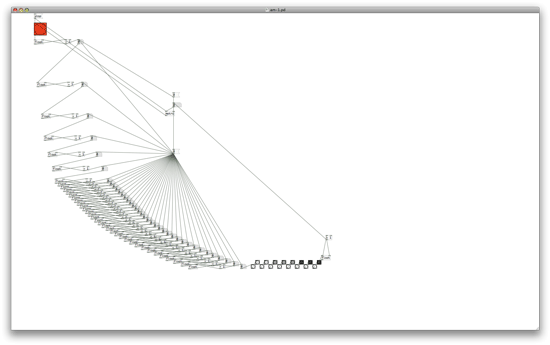
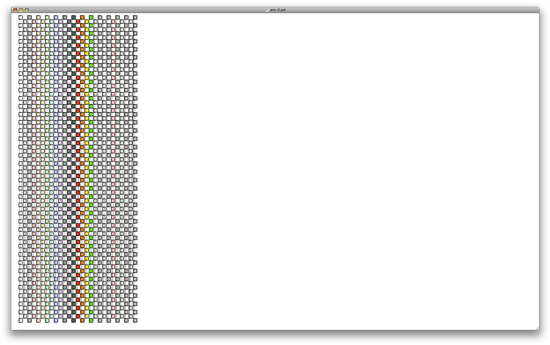
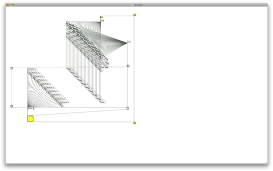
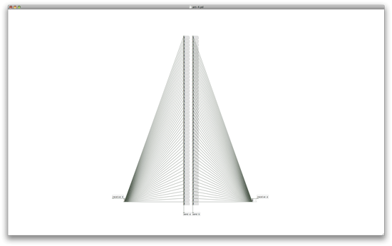
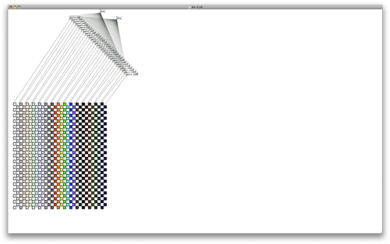

Abstract Machines is an exploration into the unspoken aesthetic dimension of
Pure Data,
a graphical programming environment made by Miller Puckette for realtime audio synthesis,
and which has been expanded into a comprehensive toolkit for digital artists.
The project is a series of Pd patches that equally evoke Gilles Deleuze and Dr. Suess - illogical, fanciful, complex -
and that have no other purpose or output but to function within their own bounds.
And yes - they crashed my computer. :p




